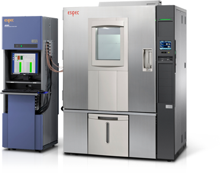

제품 사진은 ESPEC 공식 자료입니다.
신규 AMI-SPM · AMR-SPM (2026-07 출시)
Semiconductor Evaluation Systems
반도체·전자부품 평가 시스템
첨단 패키지의 미세 배선과 신소재 절연층에서 생기는 절연 열화, 저항 변화를 고정밀로 잡아내는 측정·평가 시스템입니다.
1mΩAMR-SPM 저저항 검출 수준
10V 이하AMI-SPM 저전압 절연 평가
최대 300chAMI-SPM 랙당 채널
- AMI-SPM: 10V 이하 저전압에서 절연 열화를 고정밀 검출
- AMR-SPM: 1mA 인가로 1mΩ 수준의 저저항 측정
- HAST 챔버와 연동해 시험 시작부터 종료까지 자동화
- 시험 중 와이블 분석 소프트웨어 표준
이런 시험에 씁니다
- 절연 신뢰성 평가 (AMI-SPM)첨단 패키지의 미세 배선, 신소재 절연층의 저전압(10V 이하) 절연 열화를 고정밀로 검출합니다.
- 도체 신뢰성 평가 (AMR-SPM)마이크로 비아, 인터포저 연결, 마이크로 범프 등 미세 배선의 저항 변화를 저전류에서 정밀하게 검출합니다.
- HAST 연동 자동 시험HAST 챔버와 연동해 시험 시작부터 종료까지 자동으로 진행합니다.
산업 분류는 제이에스 엔지니어링 솔루션 구분입니다. 산업별 적합 모델은 문의해 주세요.
특징
- HAST 챔버와 자동 연동
시험 시작부터 종료까지
HAST 챔버와 연동해 시험 시작부터 종료까지를 자동화합니다.
- 시험 중 와이블 분석
소프트웨어 표준
시험이 진행되는 동안 와이블 분석을 할 수 있는 소프트웨어가 표준으로 들어 있습니다.
- 탁상형 랙으로 작아진 AMR-SPM
설치 면적 약 60%, 무게 약 80% 감소
탁상형 랙으로 설치 면적은 약 60%, 무게는 약 80% 줄었습니다. 고정밀 모드와 고속 모드를 고를 수 있습니다.
- 많은 채널을 한 랙에
AMI-SPM 25~300ch/랙, AMR-SPM 40~280ch
AMI-SPM은 랙당 25~300채널, AMR-SPM은 40채널 단위로 40~280채널을 구성합니다.
장비별 사양
AMI-SPM 저전압 절연 신뢰성 평가 시스템신규, 2026-07 출시
| 항목 | 내용 |
|---|---|
| 채널 | 25 ~ 300ch/랙 (채널 제어 5ch 또는 25ch) |
| 스트레스 전압 | 0V DC 및 10mV DC ~ 10.00V DC |
| 최소 설정 분해능 | 10mV |
| 인가 전압 정확도 | ±(설정값 0.1% + 3mV) |
| 저항 측정 범위 | 2.0×104 ~ 1.0×1012Ω 이상 (10V 인가 시) |
AMR-SPM 저전류 도체 신뢰성 평가 시스템신규, 2026-07 출시
| 항목 | 내용 |
|---|---|
| 측정 전류 | 10mA 이하 전용, 1mA 인가로 1mΩ 수준 저저항 측정 |
| 채널 | 40 ~ 280ch (40ch 단위) |
| 저항 측정 범위 | 1mΩ ~ 10Ω |
| 고정밀 모드 정확도 | 1mΩ에서 ±0.7%, 10mΩ에서 ±0.1%, 100mΩ에서 ±0.05% |
| 구성 | 탁상형 랙, 고정밀/고속 모드 선택, 시험 중 와이블 분석 |
기존 AMI · AMR
| 장비 | 내용 |
|---|---|
| AMI전압 1 ~ 100V | 저항 2.0×105 ~ 1.0×1013Ω (100V 인가 시), 누설 전류 100µsec 미만 상시 검출, 챔버 최대 4대 연동 |
| AMRUD 직류 / UA 교류 | 표준 40ch, 랙당 최대 280ch, 저항 1mΩ ~ 100MΩ (UD) |
그 밖의 평가 시스템 라인업
아래 장비도 상담할 수 있습니다. 자세한 사양은 문의해 주세요. 국내 공급 가능 여부는 상담 때 안내합니다. [확인 필요]
- 전기화학 마이그레이션 평가
- 고전압 바이어스 절연 저항
- 커패시터 누설
- HTRB (H3TRB, HTGB)
- TDDB
- 일렉트로마이그레이션
- PV 열-바이어스 복합
- 반도체 파라메트릭
- 커패시터·인덕터 온도 특성
- PV I-V
- 파워 사이클
- 스태틱 번인
- 번인 챔버
- THB
- 차량용 센서 번인
출처: ESPEC 공식 측정·평가 시스템 페이지 (영문, 새 창), AMI, AMR. 수집일 2026-10-29
규격과 옵션
- 와이블 분석
시험 중 와이블 분석 소프트웨어가 표준입니다.
- HAST 연동 자동화
HAST 챔버와 연동해 시험을 자동으로 진행합니다.
- 고정밀·고속 모드
AMR-SPM에서 고르는 측정 모드입니다.
- 규격·수상
적합 규격과 수상 이력은 문의 시 안내해 드립니다.
도입부터 A/S까지
- 도입 상담시험 조건 확인 [확인 필요]
- 사양 확정모델·옵션 선택 [확인 필요]
- 견적견적서 안내 [확인 필요]
- 납품·설치설치 범위 [확인 필요]
- A/S사후 관리 범위 [확인 필요]
ESPEC 기술진과 정기적으로 기술 협력하는 제이에스 엔지니어링 서비스 조직이 사후 관리를 맡습니다.

반도체 평가 시스템 견적을 받아 보세요
평가 조건만 알려 주시면 맞는 시스템을 안내해 드립니다. 전화 상담 [확인 필요: 번호]